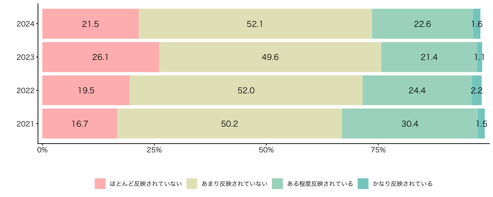
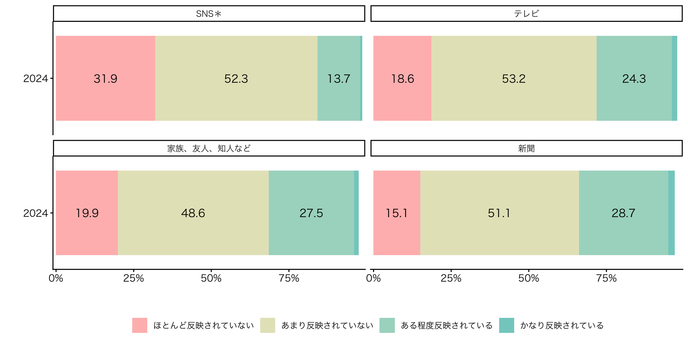
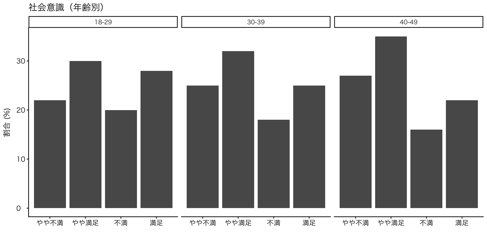

![]()

RとQuartoではじめるデータサイエンス
#1 イントロダクション
KEYWORDS
- 成績評価；中等教育と高等教育
Ⅰ. 自己紹介
自己紹介
- 氏名：苅谷千尋（かりやちひろ）
- 所属：金沢大学 教育支援センター
- 主担当業務：高大接続コア・センター業務
- 専門：政治学 > 政治思想史（イギリス）
- 18世紀イギリスの議会政治の発展に、古典古代の著作（キケロ；サルスティウス；タキトゥス）の読解が果たした役割（レトリックの受容史）cf. 市民革命史観
- Webサイト
自己紹介 > レトリックの受容史
主要研究対象
- エドマンド・バーク
- 保守主義の原理原則を論じた思想家とみなされる
確かに社会は、一種の契約である。……〔時々の利益を目的とするような契約であれば、好き勝手に契約解消も可能〕。しかし、国家stateを、胡椒やコーヒー……などの交易する際の協力協定partnershipとなんら変わらぬ存在とみなすべきではない。……国家は、今、生きている者、既に死した者、そしてこれから生まれてくる者のあいだの協定である。

データサイエンスの第一歩
- データサイエンスの誤解
- Pythonを学ぶ
- AI = データサイエンス
- ツール（有益性）に依拠した学び
- だがもっとも重要なのはデータの形についての思想・哲学
- ここがデータサイエンスの出発点であるべき
- データの形
- 表の構造; CSV; Excelの問題; Tidy Data
- データの型が整っていないとAIも機械学習も動かない
- よいデータ構造は、分析を簡単にし、エラーを減らし、再現性を高める
- データ構造を教える大学の授業はごく一部
- 表の構造; CSV; Excelの問題; Tidy Data
データサイエンスの第一歩：高校「情報」
良い点
- 必修化
- 思考型問題
課題
- データ構造についての思想・哲学を教えない
- 実際のデータ処理について教えない
- データ整理（前処理）を扱わない
- ロボット工学と混同しがち
- 教員のバックグラウンド：プログラミング＆情報技術
- NOT データエンジニアリング
- 「データサイエンス教育」ではなく「プログラミング教育」に近い
データサイエンスの第一歩
プロセス
- データ収集
- データ整理
- 可視化
- データ分析
- モデル作成（生成AIはモデルの一種）
- 意思決定
データサイエンスの第一歩：Microsoft Excelの弊害
- 日本では Microsoft Excel が「万能ツール」として使われる傾向にあり
- 本来は表計算アプリだが、表作成アプリとして利用される
- Excelの表 = データという誤解が生まれ、一般化している
- 複数行の列見出し；セル結合；セル内改行（段落）；見た目重視
- データの型の大原則
- 1列 = 1種類のデータ
- データ分析；並び替え；フィルタ；集計を可能に
- 1列 = 1種類のデータ
データサイエンスの第一歩：Microsoft Excelの弊害
| 国語 | 国語 | 国語 | 国語 | 数学 | 数学 | 数学 | 数学 | |
|---|---|---|---|---|---|---|---|---|
| 中間 | 中間 | 期末 | 期末 | 中間 | 中間 | 期末 | 期末 | |
| 名前 | 知識 | 記述 | 知識 | 記述 | 知識 | 記述 | 知識 | 記述 |
| 田中 | 80 | 70 | 85 | 75 | 72 | 68 | 78 | 74 |
| 佐藤 | 88 | 82 | 90 | 84 | 80 | 77 | 85 | 82 |
- この列には科目、試験、評価項目、という 3つの変数 が埋め込まれています。
- 列 = 変数 × 変数 × 変数
aa
| 名前 | 科目 | 試験 | 評価 | 点数 |
|---|---|---|---|---|
| 田中 | 国語 | 中間 | 知識 | 80 |
| 田中 | 国語 | 中間 | 記述 | 70 |
| 田中 | 国語 | 期末 | 知識 | 85 |
| 田中 | 国語 | 期末 | 記述 | 75 |
| 田中 | 数学 | 中間 | 知識 | 72 |
| 田中 | 数学 | 中間 | 記述 | 68 |
データサイエンスの第一歩：Microsoft Excelの弊害
覚えてほしいルール
-
データ表では
- 1列 = 1種類のデータ
- 1行 = 1観測
- 1列 = 1種類のデータ
この原則を守るだけで 多くの問題が解決します。
データベース；データ設計；データエンジニアリング
データサイエンスの第一歩：Microsoft Excelの弊害
国の政策への民意の反映（総数・年ごとの推移）[^1]
- あなたは、全般的にみて、国の政策に国民の考えや意見がどの程度反映されていると思いますか
データサイエンスの第一歩：Microsoft Excelの弊害
国の政策への民意の反映（クロス集計：情報入手先）
- あなたは、社会の動きを知ろうとするときに、どこから情報を得ることが多いですか。（○はいくつでも）

選挙制度： 『公共』（東京書籍）
国の政策への民意の反映（クロス集計：現代日本懸念点）
- あなたは、現在の日本の状況について、悪い方向に向かっていると思われるのは、どのような分野についてでしょうか。（○はいくつでも）

aa

データサイエンスの第一歩：Microsoft Excelの弊害
- 内閣府大臣官房政府広報室 世論調査「社会意識に関する世論調査」
Ⅶ. 次回の授業と宿題
次回の授業と宿題
次回
- 福祉国家と現代日本の課題
- 12月17日（水）の配信を予定
宿題
- 授業の感想：
- 回答先： Google Form
- 締め切り：12月15日（月）23時59分
- リーディング・アサインメント：
- 回答先：Google Form
- 締め切り：12月15日（月）23時59分